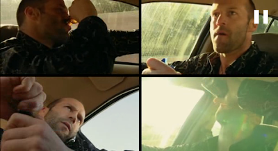

Hafta 36
Economist
[Japonya'daki secim] sonucunun sebebi onyillarca biriken sosyal degisimdi; yillarin deneyimiyle oyverenler [iktidardaki] LDP'nin patronluk yapan, oyverene rusvet vermeye dayanan politikasinin icyuzunu gordu. Oyverenler artik yollar, ve hicbir yere gitmeyen kopruler yerine doktorlar, hemsireler, ekonomide firsatlara sahip olmak istiyorlar. Mr. Curtis'e gore bu "makine politikasinin sonudur".
Yine 3. Dalga
Doktorlar, hemsireler, ekonomik firsatlar... Bunlar kod kelimeler; Insanlar hizmet / bilgi bazli ekonominin uretecegi profosyonel isleri, firsatlari istiyorlar. Biten makine politikasi kelimesindeki "makine" vurgusu bilincaltisal yapilmis dogru bir vurgu [1]. Insanlar makine icinde mavi yakali ufak bir parca degil, beyaz yakali islere sahip bireyler olmak istiyorlar. Ve bunun tum etkileri, arka arkaya yayilarak (cascade) toplumda bir "duzen" degisimini ortaya cikartiyor. Politik partinin degismesi bunun yan etkilerinden birisidir.
Business Week
[mealen] Cin krizden cikmak istiyorsa, ic piyasaya odaklanmali, servis ekonomisini ilerletmeli, finans alt yapisini saglamlastirmali.
Ilginc
Simdiye kadar Cin ucuz isgucune dayanarak pur ihracat temelli bir gelisimi tercih etti. Kanaatimiz "ABD alir / Cin ucuza imal eder" yapisinin jeopolitik bir kurgu oldugudur (baslangici da Nixon'un Cin "acilimi"). Sovyetler bu sekilde kapitalist, yari-kapitalist ulkelerle iki taraftan "sarilmistir"; Cin devleti ise bu anlasmadan memnun olacakti, halkina kismi aciklik vererek yonetimi elinde tutabilecekti; koyluler iscilere cevrildi, fakat modernist, endustriyel bir toplum otoriter sekilde de yonetilebilir (tam liberalizm hizmet / bilgi ekonomilerinde kacinilmaz hale gelir), bu yuzden iktidar devam etmistir.
Fakat bu modernlesme 18. yuzyilda degil, 20. yuzyil sonunda vuku buluyordu. Bilgisayar icat edilmis mertlik bozulmustu. Cin'in de urettigi bu araclar sosyal dokusuna tabii ki girecekti, iletisim araclari bireysellesecekti. Bunun sonucu olarak Cin, mevcut ekonomik duzen icinde "bile" hissedilmeye baslanan ozgurluk, demokrasi eksikligi yuzunden sadece devlet rakamlarina gore yilda 80,000 sonu kanli biten ayaklanma yasamistir.
Eger Cin Business Week'in tarif ettigi yoldan gidecek olursa, bu daha fazla doktor, daha fazla turizmci, reklamci, finansci demek olacaktir. Pek cok is kolundan insan ulkesinin bireylerine bakacak, onlara "satmaya" onlari "anlamaya" ugrasacaktir. Ustune ustluk becerileri ile para kazanan bu insanlar daha az "koyun" olacaktir. Bu kendi kendini buyuten, tasiyan surec eninde sonunda ozgurluk taleplerinin dayanilmaz hale getirebilir, ve boyle bir durumda mevcut idare yapisinin ayakta kalabilecegini dusunmek hayal olur [2].
Cunku ihracat temelli eski usul uretim ve isgucu yapilanmasini surdurmek zor gozukmektedir; ABD eskisi gibi dev aciklari verecek durumda degildir, ucuz para devri bitmistir. Cin'in "gercek" ekonomiye "gercek" taleplere ve yeni "uretim sekline" ve onun tetikledigi sosyal degisimlere gidisi bu temelde ilerleyecektir.
[1] Endustriyel, modern ekonomilerde "makine" vurgusu onemlidir. Lenin Sovyetlerde yonetimi ele gecirince "tepe makinist (supreme mechanic)" olmustur mesela. Marksistler devlet "makinasini" ele gecirmek isterler.
[2] Cin yonetimi bunun cok iyi farkinda tabii; Toffler'i en iyi okuyan milletlerden biri kendileri, Toffler Cin'de en fazla okunan ikinci yazar ve en son kitabi, Revolutionary Wealth'in "Cin'de yukselebilecek alternatif bir lideri" tasvir eden kismi Cince tercumesinde dikkatle sansurlendi.
[3] Marksizm, Nazizm, Kemalizm gibi (birbirine cok benzeyen) ideolojilerin siyasi cozum yelpazesinden silinmesindeki sebep bu hissiyatlarin kolektivist ruhlari sebebiyle yeni uretim sekliyle olan uyumsuzluklaridir. Bu dusunce tarzlari modernite sonrasina intikal edememistir.
Dogan Turkish Daily News
[Turkcell CEO'su Sureyya Ciliv'den -guya- alintilayarak] "Communications technology is a contributes much to growth" (2 Eylul 2009)
Chicken translate
Bu ne bicim tercume? Karanlikci medya: Zaten kendinizi hergun Turkiye'de Turkce olarak rezil ediyorsunuz, bir de Ingilizce olarak tum dunyaya rezil etmeyin. Bizden soylemesi..
Gulay Gokturk
Birinci grup reformlarda -yani temel hakların iadesinde- Coşkun'un da belirttiği gibi, uzlaşma aramak demokrasinin en temel ilkesini hiç anlamamaktır. Bir insanın ana dilini özgürce kullanıp kullanamayacağını, çocuğuna istediği adı koyup koyamayacağını, ana dilini ve kültürünü geliştirme çalışmaları yapıp yapamayacağını, kendi kimliğini rahatça ortaya koyup koyamayacağını çoğunluğa sorarak karara bağlayamazsınız. Bu konuda hiçbir Meclis, hiçbir hükümet ya da hiçbir kamuoyu yetkili değildir ki uzlaşma aransın. Temel hakların "insan olmaktan kaynaklanan ve geri alınamaz haklar" oluşunun anlamı da zaten budur.
Dogru
Aziz Ustel
Yağmur sadece Türkiye’de yağmıyor...Diğer, gelişmiş ülkelerde de yağıyor...Ama oralarda ‘böyle olmuyor...’
Yanlis
Aynen boyle oluyor. En son yasanan sel felaketi ABD'deki Katrina kasirgasi ile benzerlik gosteriyor hatta. Bu felakette bariyerlerin dayanamayacagi tahmin edilememisti, bariyerler coktu ve sehri sel basti. Bush II bu felaket sonrasi cok suclandi, fakat adam, en azindan bu kez, direk suclu degildi. Sel sonrasi halka iliskilerde bir suru hata yapti, popularitesi cuvalladi, buna cok sevindik o baska mesele.. Katrina bir 'mukemmel firtina' idi, Istanbul seli daha ufak boyutta benzer sekilde. Butun gece tek bir yere, iki bolgeden gelen yagmur dalgasi carpmistir.
Olay Siyah Kugu tanimina uyuyor, Nassim Taleb'in tarifine gore nadir olan ama olunca herseyi allak bullak eden is. Siyah Kugu'lar icin modern burokrasilere guvenemezsiniz. Kutucuklar ve kanallar sistemi lineer burokratik yapilar, basi belli sonu belli sorunlarla basa cikabilirler. Yol yapilacaktir, basi bellidir sonu bellidir (kelimenin tam anlamiyla), parasi bellidir, bir zaman secilir, yapilir. 'Yol yaptim' denir, oy istenir. Felaket nereden geliyor nasil geliyor? Kutucuklar bu dunyada kaybolur.
Dogal felaketlerde getirilen cozumlerin hep 'bir onceki felakete cevap' olduguna dikkat edin, cunku yapilacagin net belli oldugu tek zaman o zaman. Burokrasi isliyor. Katrina sonrasi bariyerler coktugu yerde tamir edilmistir, TR'de bir onceki selin bastigi yerlerde dere islah edilmistir.
Imar konusuna gelince; Sehir Tercihi yazi dizisinde gorduk ki insanlar sehirlere geliyorlar. Her turlu is icin geliyorlar. Akin akin geliyorlar, bulduklari yere yerlesiyorlar. San Fransisco, New York bu sekilde gecekondulasmanin evrilmesi sonrasi bu hale gelmistir, 'efendim konut monut' sozleri bahsedilen boyutlarda gocu idare etmek icin devede kulak bile olamaz. Tarihin kendisi kadar eski bir surec, ozellikle megasehirlerin daha da onplana cikmasiyla artik daha hizli olarak, islemektedir. Bu gocun boyutlarini kucumsemeyelim. Koylerde yaslilardan baska insan kalmadi! Anlatabiliyoruz insallah.
Eger olasi felaketlere onceden hazir olmak istiyorsak, bu ongoru demektir, ongoru bilim demektir. Bu tur arastirmalari bagimsiz calisacak dusunce kurumlari, gonullu bazi arastirmacilar "yaparsa yapar". Bunun tesvigi (incentive) ne olacaktir? Nerede ne zaman ve sonucu %90 kesinlikte biliniyor olsa bile, yonetim seni dinliyor olsa bile, takir takir bir yerleri yikmak, temizlemek idarenin yapacagi is midir? Belli degil.
Dunyadaki mevcut, yaygin yonetim yapilanmasi ve mevcut goc rakamlari ve Istanbul'un cografi sabitler isiginda 'hic beklenmeyen' problemlere hazir olmak bizce hayaldir.
Emre Akoz
Bense konunun başka bir yönüne değinmek istiyorum. Resmigeçit, özellikle askerlerin kitleler halinde rap rap yürüdüğü türden resmigeçit, aslında çağın gerisinde kalmış bir değerdir. Bu tip gösteriler, teknolojiden ziyade kafa sayısının önemli olduğu dönemlerden kalmadır. [..] Artık ileri teknolojileri kullanan, vurucu gücü yüksek, buna karşılık küçük ama çok hareketli orduların çağına girdik. [..] İleri teknoloji; komutanı bilimci, arazideki askeri ise bilgisayarcı haline getiriyor.
Kalabalık ordu, Zayıf Türkiye
Katiliyorum.
David McDowall
[..] Turkiye'nin politik yapisi [..] zaten 1950'li yillardan beri bolunmeye ve yokolmaya yuz tutmustu. Bunun bir sebebi kismen secmenin iradesinin zayiflamasina sebep olan ardi ardina gelen uc tane askeri darbeydi. Bir diger sebep 1980'lerde devreye sokulan ideolojik doktrindir. Bu doktrin "Turk-Islam sentezi" olarak adlandirilabilecek bir kurgudur; buna gore Turk, Osmanli ve Batililastirici dusunceler biraraya getirilerek bir Turk-Sunni sentezi one cikartilmaktaydi.
Senteze dikkat
Goruyoruz ki darbe rejiminin ittirdigi Turk-Islam sentezi icinde Osmanlicilik ta var. Demek ki bu hissiyat bir "aclik" ya da "dirilen ilgi"den degil, dupeduz idare edilen merkezi bir "ittirmeden" ortaya cikmis. Osmanliciligi tekrar tekrar pisirip servis eden kisiler bunu kendilerine bile unutturmus olabilirler: ama onlar katiyen "aykiri" "siradisi" sahsiyetler degildi. Aslinda koyun gibi 80 model MGK sentezinin pesine takilmislardi, bu kavramlari cilalayip parlatanlarin 80/90'li yillarda kitlesel haber kaynaklarinda onde olmalari da bir raslanti degildir. Ondeydiler cunku one surulmuslerdi. Uslu cocuk gibi kendilerinden bekleneni yerine getirdiler; yeni bir cigir acmadilar, gerceklerle ilgilenmediler. Romantik bir takim fantaziler ile mesgul oldular.
Osmanli hakkinda ekleyecek bir seyimiz yok; Dandik bir koylu imparatorlugudur. Iki eliyle bir s..i dogrultamamistir. BURSALI bir yapilanmadir.
Bir kısım yabancı medya
[mealen] Lockerbie teroristlerinden bir kisi Libya'ya geri verildi. Bunun sebebi Bati'nin Libya ile ticari iliskileri yuzunden mi?
Bir de soruyor
Tabii ki ticari iliskiler icin kardesim, yani, ortada kabak gibi duran gercek hakkinda daha ne diye laf geveliyorsun? Aynen ABD'nin Irak'a girmesi sonrasinda "acaba petrol icin mi?" beyanini yapabilen parlak medya, bu durumu da bir 'soruya' cevirmeyi basardi. Lockerbie teroristi zaten hasta bir adam, yakinda olecek, saliverilmesi Kaddafi'ye kendi ulkesi icinde prestij sagladi (iste, bak, adamimizi cikarttirdim, vay aslan ben, vs), diger yandan Lockerbie suclusu adam zaten olecek, cezasini cekmis, saliversen ne olacak? Iade etmek ticari iliskilere (yani petrol alisverisine) iyi bir etki saglayacaksa, sal gitsin! Onlar da saldilar iste. The End.
Bir yorumcu
Herseyden Ittihatcilar sorumlu
Yanlis
Bazilari 80 model MGK sentezine biat ederek Ittihatcilar ile Osmanlilar arasindaki baglantiyi "caktirmadan" silmeye ve boylece Osmanliciligi kurtarmaya ugrasiyor. Ayni cakallar Mustafa Kemal ile Ittihat ve Terakki Cemiyeti (ITC) arasindaki baglantiyi azaltmaya ugrasiyor, boylece Osmanli sirasindaki tum yanlisliklar "Ittihatcilara" atilarak Osmanli kurtariliyor, (Cumhuriyet olmayan) Cumhuriyet sirasindaki tum hatalar Ismet Inonu uzerine atilarak Mustafa Kemal kurtariliyor. Sonra Batililasma = Ataturkculuk diye bir baglanti cekilerek [2] hoop, chicken translate bir gecis .. ve al sana sentez: Baticilik, Osmanlicilik, Turk, Islam. Mutlu son.
Ama bu arada gercekler ne oldu? Mustafa Kemal bir Ittihatciydi. Ermeni azinlik hakkindaki gorusleri ITC'yi aratmayacak niteliktedir. Kurt azinligin basina gelenleri hepimiz biliyoruz.
Ittihatcilar Osmanli'dir (yok ya?). Eger Osmanli Balkan Harbi'nde hezimet yasamasaydi, Osmanli'nin parcasi olan ITC'ye "sira gelmeyecekti". Demek ki Osmanli bu gecisin sebebi, ayrica ITC'yi icinden cikartarak, basa getiren dinamigin birinci derecede sorumlusudur. Topluluklar deneme/yanilma ile pek cok cozumu dener, Osmanli denemesi icinde ITC bilfiil mevcuttur. Yelpazenin parcasidir, icindedir. Otarsik, despot koylu imparatorlugu icinden otarsik, despot "modernlesmeye ugrasan ama modernlesemeyen" koylu devletini cikarmistir; doguran ve dogrulan birbirlerleriye 100% uyum icindedir. Fazla zenginlestigi icin tuccarini oldurten saray mantigi ile liberal oldugu icin dusunurunu linc ettiren asker / burokratik olusum arasinda bir fark yoktur.
Bazi arkadaslara tavsiyem, bu "kurtarma operasyonlarindan" vazgecmeleri ve gercekleri arastirmaya baslamalaridir. Inansinlar ki gercekleri anlayinca kendilerini cok daha iyi hissedecekler. Icleri rahatlayacak.
[1] Muslumanlar bu sentez icinde yer almaktan mutlu oluyorlar tabii.. ama sentez onlara "su sekilde musluman olacaksin" deyince onlar da apisip kaliyor. Devir hicbir kimligin, zevkin, bireyselligin "tepeden" tanimlandigi bir devir degildir. Is / calisma sekli (guc dinamiginin en onemli belirleyicisi) artik bunu gerektirmektedir.
[2] Bu kisilerin, dikkatle, neredeyse tum akademik literaturun kullandigi Kemalizm kelimesinden nasil uzak durduguna dikkat edin. Ataturkculuk = Baticilik yapilarak, Kemalizm bir kenarda gozden uzak tutulmaya ugrasiliyor.
Anonim
[filan] Cumhuriyet [falan] Cumhuriyet..
Ne Cumhuriyeti?
1925-50 arasindaki 'sey'den bahsediyorsan, ona Cumhuriyet denmez. O tarihlerde devlet yonetiminin hicbir mesruiyeti kalmamistir, ondan onceki meclise de demokratik denemezdi ama en azindan bir temsiliyet kabiliyeti vardi. Ikinci Meclise Kemalist olmayan kimse alinmamistir ve o noktada Cumhuriyet sona ermistir.
O zaman rejim neydi?
Bir tur Baas yapilanmasidir. Niye Baas? Bu ideoloji sosyalizm ve milliyetcilikten olusmustur; Turkiye'de Kemalizm icinde milliyetcilik zaten mevcuttur (bkz. alti ok), sosyalizm yoktur ama ona cok benzeyen, yakin kuzeni Fransiz Dayanisma ideolojisi vardir. Efendim dayanisma nedir? Tarif edelim; insanlar biraraya geliyorlar, herkes bir odaya dolusuyor, sonra herkes birbirine dayiyor (tam Fransizlara gore bir is). Sistem boyle isliyor... Yani, latife ediyoruz biraz ama "fiili sonuc" asagi yukari boyle.
Tabii burada insanlarin kendi istegi ile birbirine yardim etmesi, yardimseverlik olan dayanismadan bahsetmiyoruz; devlet eliyle yaratilan bir garabet sentezden bahsediyoruz.
Ziya Gokalp gerisini anlatsin.
CNN Haberi
[mealen] Japon isadami [..] kotu zamanlarda calisanlarini isten cikartmak istemiyor. Bunun Japon kulturune uymadigini belirtiyor
Iyilik mi yapiyorsun kotuluk mu?
Haberde roportaj yapilan isadami, kotu zamanda calisanlarini isten cikarmanin "Amerika'da uygulandigini" ama bunun "Japon kulturune uymadigini belirtiyordu". Fakat bir sure sonra ayni isadamiyla yine roportaj yapilmis ve adam suklum puklum bir halde, isten cikartmalara mecbur kaldigini soyluyordu. Benim aklima takilan soru ise "bekleyerek iyilik mi ettin kotuluk mu?" Belki isten cikartsaydin isini daha cabuk ve rahat kurtarabilirdin. Milton Friedman sirketlerin sosyal sorumlulugunun kar yapmak oldugunu soylerdi, dogru soylemistir. Sebebini de soyleyeyim: Butun icin neyin iyi oldugunu siz bilemezsiniz. Beser bazen (cogu zaman?) kendisi icin bile neyin iyi oldugunu tam kestiremiyor, deneme / yanilma (tecrube) ile el yordamiyla bunu basarmaya ugrasiyor. Ortada boyle bir durum varken, kendini unutup "toplum muhendisligi" yapmanin alemi yoktur. Tersini savunan kolektivistin her turune karsi uyanik olmak gerekiyor.
Hz. Ali'nin sozu: "Budalalar ile arkadaslik yapmayin, onlar size iyilik yaptigini zannederken kotuluk yaparlar". Kolektivist, sol kesimin arkadasligi buna benzer. Budalanin arkadasligidir. "Iyilik yaptigini" zanneder ama aslinda kisilere ve butune zarar verir. Bu tur sosyal pislik, Turkiye'ye pek cok guzelligin geldigi Fransa'dan gelmistir dogal olarak orada programlanmis "sol" kisilikler yillarca TR'de dusunce ortaminin icine etmislerdir (Marks'in Fransa'da uzun zaman yasadigini hatirlatirim).
Ustte anlattigimiz problem, asiri hizlanan hayat dolayisiyla daha da belirgin hale gelmekte. Gun gectikce baskasi icin dogru olani daha az kestirebilir hale geliyoruz. Bu baglamda ana sabitler, altyapi insasi (rekabeti bozmaz, herkese esit fayda saglar), bireyin onunun acilmasi, tercihlerinin fazlalasmasi ve esnek ama adil kanunlarin kayirma olmadan uygulanmasi, takibidir.
Der Spiegel
[Hur demokrat] FDP'nin buyumesi sosyal bir degisimin isareti. Eskiden isci sinifinin kapitalistler tarafindan somurulmesi o cagin en belirgin ozelligiydi. Simdi kucuk isletmeler ve beyaz yakalilarin devlet tarafindan somuruldugunu goruyoruz; devlet kapitalistlerin yerini aldi. Bu somuruden etkilenenler isyan ediyorlar, aynen iscilerin isyan ettigi gibi. Politik baglamda gozumuzun onunde tarihi bir kayma meydana geliyor, geleneksel mavi yakali partiler oy kaybederken beyaz yakali calisanlari temsil eden partiler guc kazaniyor.
Ilginc
Soylenenlerin ikinci kismi cogunlukla bu blog'un teziyle uyumlu; devletin beyaz yakalilari somurdugu saptamasi ilginc olan gozlem. Kastedilen Alman devletinin paralarinin car cur edilmesi, kurtarma operasyonlarinin buyuk sirketlere gitmesi mi acaba? Ya da, daha buyuk sistemik rahatsizliklardan mi bahsediliyor. Bu rahatsizliklarin oldugu malum, peki bu rahatsizliklar somuru olarak gorulebilir mi? Dusunmeye deger.
Her halukarda 3. dalga geliyor, ve bunun ister istemez guc dinamiginde yansimalari olacaktir.
Taha Akyol
Ulus devlet [..] yerin dibine batırılıyor. Ve daha önemlisi, ulus devleti yerin dibine batırmak uğruna, teknoloji faktörünün de gözden kaçırılmasıdır: Ulus-öncesi dönemlerde kabile, din ve imparatorluk savaşlarında kılıç ve ok değil de kitle imha silahları olsaydı kullanmayacaklar mıydı?!
Teknolojiyi siz de gozden kacirmissiniz
Teknoloji argumanini yanlis kullaniyorsunuz. Ulus-devletin olmasini mumkun kilan sey zaten kitlesel teknolojilerdir. O teknolojilerin kabile devrinde olmasi mumkun degildir, olsaydi, o da ulus-devlet olurdu. Anlatabildim mi? Mantik zinciriniz yanlis.
O zaman, ulus-devletin olusmasini saglayan kitlesel teknolojiler ise, onun zayiflamasi da ayni sekilde kitlesel olmayan, yeni bilgi, iletisim teknolojilerinin onplana cikmasi sayesinde olacak. Nitekim boyle oluyor.
Muhakkak "her seyin sorumlusu ulus-devlet" diyenler de sizin gibi yuzeysel bir arguman ileri suruyorlar. Kitlesel uretim, tuketim, kitlesel yokedimi dogal olarak ortaya cikardi, merkezi yapilanmalari, merkezi, Ford'un tek tip arabalari gibi tek tip kimlikleri dogurdu. Sorumlu bunu tetikleyen 'sey'dir. Yani hem sizin hem karsinizdakinin argumani yeterince derin degildir.
Almanya ve Sol
TIME makalesi, Josef Joffe, Eylul 2009
Bugunlerde iddiaya girmek isteyenler icin herhalde en saglam kumar, Angela Merkel'in 27 Eylul'de secimi kazanacagi secenegidir. Onemli olan bu degil, esas soru, Merkel'in son dort senede oldugu gibi sosyal demokratlar ile mi yoksa ozgur demokratlar [..] ile mi koalisyon yapacagi. [..]
Bu hikayeye aslinda "Avrupa'da Demokratik Solun Cokusu" gibi bir baslik ta verebilirdik. Sosyal demokratlar (SPD) aylarca Merkel'in partisini 15 puan arkadan takip etti. [Bu cokusun] hikayesindeki daha uzun vadeli guclerin varligi ise aslinda 19. yuzyilin sonlarina uzaniyor. Bu zamanlarda endustriyellesme ona tepki olarak bir suru reformist partinin ortaya cikmasina sebep olmustu. Bu hareketlerin dogal musterileri endustriyel proleter sinif idi, parti programlari refah devleti ve servetin tekrar dagitimi gibi seyler iceriyordu. Fakat Avrupa o gunleri geride birakti. Bu tur partilerin icinde varoldugu sosyal ortam hizla eriyor, bu sebeple ekonomik krizin ortasinda bile sosyal demokratlar daha fazla harcama, daha fazla vergi ve envai turden ikram iceren mesajlari ile kimsenin ilgisini cekemiyorlar. Dunyanin ilk endustriyellesmis ulkesi, imalatin GDP'ye katkisinin yuzde 16 oldugu Ingiltere'de mavi yakali isci sinifi nerelerde? Almanya'da bile durum ayni.
Endustri yokolunca sosyal demokrasi de yokoluyor.
Merkel Almanya'da kazaniyor cunku SPD'nin bir zamanlar yuzde 40'lar seviyesinde olan destegi artik yuzde 25'in altinda. Tabani catirdayan sol, boyle bir ortamda onun icin cok rahat gelen bir aliskanliga donuyor; hiziplere bolunmek. Almanya'da birliktelikten disari kacan ilk yesilciler oldu; bunlarin politikasi kultur savasi, anarsi, cevrecilik ve pasifizm iceren bir sentez idi [..], sonra radikal solcu Die Linke ayrildi, bunlar Schroder'in reformlarini hazmedemeyen eski Dogu Alman komunistleri ve Alman solcularindan olusan bir gruptu.
Asiri Hiz
Hayat hizlaniyor. Etrafimizda surekli, ozellikle ekonomisi profosyonel is gucune dayanan ulkelerde gormek mumkun; islerini daha sIk degistiren insanlar, daha cok tasinma, daha cok evlenme, bosanma, ikinci, ucuncu, dorduncu kariyerler, diplomalar, girisimler. Tempo delice. Dogru durust bir duzen yok. Hersey corba.Toplum yapisi asagidan yukari dogru hizla cesitlenmekte, ABD gibi ulkeler hem aldiklari surekli goc ile hem de is yapis tarzlari cesitlenen bireylerin etkisiyle ilginc bir karisim halini almakta. Bu insanlarin tercihi yeni peydahlanan megapolis super sehirler ise artik neredeyse devlet boyutlarinda. Misir'da Kahire Misir'in ta kendisidir, icinde her turlu ekonomik duzeyi, iskolumu, yas, irk, dil grubunu barindirir. Amerika'da Miami sehrinde Ingilizce ikinci dil haline gelmistir [1].Bu delice karisimi ve hizi beyaz perdede en guzel yansitan filmlerden biri Crank. Filmde Chev Cherios adli kiralik katil dusmanlari tarafindan bir ilacla zehirlenir, ki bu ilginc zehir, eger onu alan kisinin kalp atis ritmi duserse kisinin olmesine sebep olacaktir. Bu kurgu sadece filmin anlatmak istedigi hikaye ve takip edecek macera sahneleri icin bir bahane muhakkak; filmin geri kalaninda aksiyon rollerinden iyi bilinen aktor Jason Statham'in kalp temposunu arttirmak icin binbir numara yaptigini, sekilden sekle girip kendini garip ve komik durumlara dusurdugunu goruyorsunuz.
Cherios ayni anda, olmemek icin muthis bir hizla Los Angales megapolisinde ilerlerken bize sehirde yatay bir kesit te gosteriyor. Ispanyol, Arap, beyaz, taksici, mafya, doktor, envai turden karakter ile Chev'in yolu kesisiyor. Cherios icinde oldugumuz delice tempolu hayatin, kurallari, duzeni yerine oturmamis bu corbanin bir kurbani. Sembolik olarak onun uzerinden kendi hayatimizin delice hizini anliyoruz. Fakat Cherios kurgusu oyle abartili ki bizim hizimiz muhakkak daha az gozukuyor, ve bu abartiya gulup belki kismen rahatliyoruz. Cherios bir kopekbaligi gibi, hareket etmezse olecek (kopekbaliklari solunum icin surekli hareket etmek zorundadir) seyirci en azindan bu tehdidi hissetmemektedir ve arkasina yaslanip Crank'in isledigi abartili kurguyu seyredip eglenebilir.--[1] Miami orneginde sunu da bilmek lazim; Bu sehir Kuba'dan kacan zenginlerin sigindigi ilk yerdi ve bu zengin kisiler Kuba'da harcayamadiklari tum parayi bu sehri insa etmek icin kullandilar. Sehri bu hale getiren onlarin sermayesidir. Ayni sebepten sehirde anti-Castro hissiyatlar oldukca gucludur, bu gocmenler yillarca bu sebeple Kuba'ya kendileri gibi sahin duran Cumhuriyetci adaylara oy vermislerdir (simdiki valileri Bush II'nin kardesi hatta -Bush III !!-, Meksika'li hanimla evli, Cumhuriyetci).


Eklemlenmis gerceklik (augmented reality) kavramindan bahsetmistik. Bu kavramin son zamanlarda en gozde ornekleri Android ve iPhone telefonlarda cikan gercek zamanli rehberlik uygulamalari. Alttaki video'da Biyonik Goz adli uygulamayi gorebilirsiniz, bu uygulama telefonunuzu sehirde herhangi bir yere dogrulttugunuzda arka planda olabilecek metro, restoran bilgilerini otomatik olarak telefon ekranindaki gercek zamanli goruntu uzerine 'eklemliyor'. Isin muhendisligi aslinda cok zor degil; Android ve iPhone icinde pusula ve GPS yer belirleyici var, bu bilgileri kullanarak uygulama, telefonun nerede ve nereye dogrultuldugu elde ediyor, ona gore o lokasyondaki onemli isaretleri veri tabanindan aliyor ve aninda goruntu uzerine ekliyor.
https://youtu.be/OJmB1lWIdGw
Turkiye ilk uydusunu uzaya firlatti. Projede calisanlari, ITU'yu kutluyoruz, bu alanda basarilarin devamini diliyoruz.
Krugman'in "Ekonomistler Niye Cuvalladi?" yazisinin "basligi" uygun dursa da yazinin icerigi saglam degildi. Bunu takiben John Cochrane adli bir ekonomist karsi saldiriya gecmis, o yazinin icerigi daha iyi. Ekonomistlerin cuvalladigi dogru, ne bilmediklerini bilmiyorlar, kendi alanlari disindaki alanlara ilgisizler, matematikleri saglam degil, var da var. Bir grup fizikcinin kendi kullandiklari araclari ekonomi bilimine tasimaya ugrasmalari iyi bir caba. Fakat Krugman gibi problemi dogru teshis edemeyip Avrupai bir takim sacma sapan yollara girmeye de gerek yok (herif Isvec'e bayiliyor). Agzi varmiyor ama basbayagi devletcilik yapiyor. "Aptal bankerler" diyor, e onlar insan, regulatorler insan degil mi? Onlar daha mi az aptal olacak?
Cochrane'in yazisinda bitirici vurus surada: "Krizin odak noktasi oldukca libere edilmis, regule edilmeyen borsa degil, asiri sekilde devlet tarafindan regule edilen ticari bankalardi". Cat.
Ha bir de Krugman Asimov'un bilim-kurgu eserleri Vakif romanlarinin hayraniymis, oradaki psiko-tarih ile "makro" arasinda baglantilar kuruyor arkadas... Ama o kulliyatin tamamindan haberi yok; Gaia yapilanmasi ile Asimov gelecegi birbiri ile hizla iletisebilen, daginik bir yapiya "emanet etti".
Boyle okuzlere bir de Nobel veriyorlar.
Vallahi Nassim Taleb dogru soylemis; ekonomideki Nobel odulunu kaldirmak lazim.
Turkiye Kultur Kodlari
Alttakiler bazi Turkiye kultur kodlaridir; bu liste yasayan bir liste olacak, yeni kodlar buldukca buraya ekleyecegiz.
Araba: KIZ ARKADASI
Turkiye: MISAFIRPERVERLIK
Sevgi: ACI
Futbol: TARAFTARLIK
Bilgi: RUTBE
Asker: ANORMAL
Dogru olan: DISARIDA NE VAR
Hayatin amaci: SAMIMIYET
Saygideger: ORNEK OLAN
Devlet: AILE
Universite: SARAY
Gecmis: GUZEL GUNLER
Sigara: OZGURLUK
Cocuk: SANAT ESERI
Disislerinin amaci: ONEMLI OLMAK
Fikir savunmak: ISYAN EDIYORUM
Hakli olan: EZILEN KIM
Kimligini vurgulamak: TERSINI SOYLEMEK
Gencler: YONTULACAK ODUN
Hayat kalitesi: TEMIZLIK
Sehirlerin ruhu / verdikleri mesaji hakkinda yazidan hareketle:
Istanbul: HAVALI OLMALISIN
Amerika'da yuksek egitim bozulmus halde. Bir universitenin yillik odemesi $25,143 seviyesine gelmis durumda ve ogrenciler ders kitaplarina ek olarak $1,077 oduyor. Hatta, egitim masraflarinin artisi gectigimiz 30 senenin 29'unda enflasyonu gecmis durumda. Yabanci ogrencilerin okullarimiza gelmesi yuzde 3 dustu, ki bu son 5 senedeki ilk dusus. Egitim bakani Arne Duncan bile daha yaratici fiyatlandirma modelleri tavsiye ediyor. Ek olarak "Y nesli" olarak bilinen cocuklar klasik sinif ortaminin ihtiyaclarina cevap vermedigini dusunuyorlar [..]. Internet tarafindan transforme edilen pek cok diger sektor gibi, yuksek egitim de buyuk bir degisimden gececege benziyor.